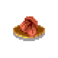

Blasphemous Collectible Checklist
Brotherhood of the Silent Sorrow
Petrous Bell (True Torment)
Corpse

Child of Moonlight
Prie Dieu
The Holy Line
Thorn (Deogracias)
Prie Dieu
Jibrael #1 (Petrous Bell + Weight of Sin)
Corpse (Weight of Sin)
Quicksilver (Weight of Sin)
Verdiales of the Forsaken Hamlet
Painted Wood Bead
Clavicle of Dalhuisen, the Schoolchild (Weight of Sin)
Knot of Rosary Rope (Weight of Sin)
Child of Moonlight
Albero
Prie Dieu
Tirso #1
Dove Skull
Child of Moonlight (Far)
Mea Culpa Altar
Ludovico #1
Corpse
Phalanx of Brannon, the Gravedigger
This work is licensed under a
Creative Commons Attribution-ShareAlike 3.0 Unported License